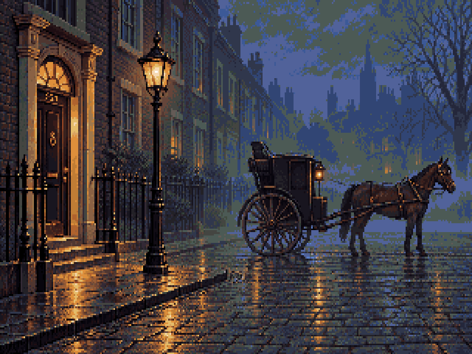
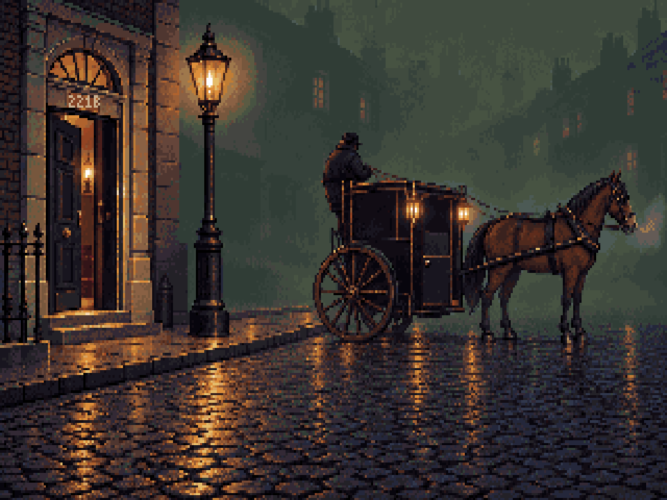
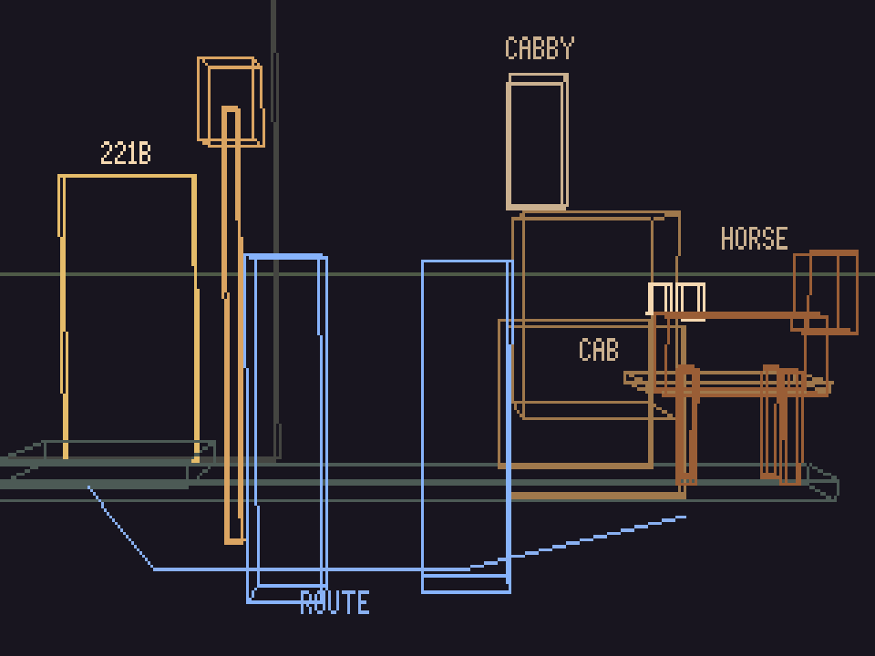
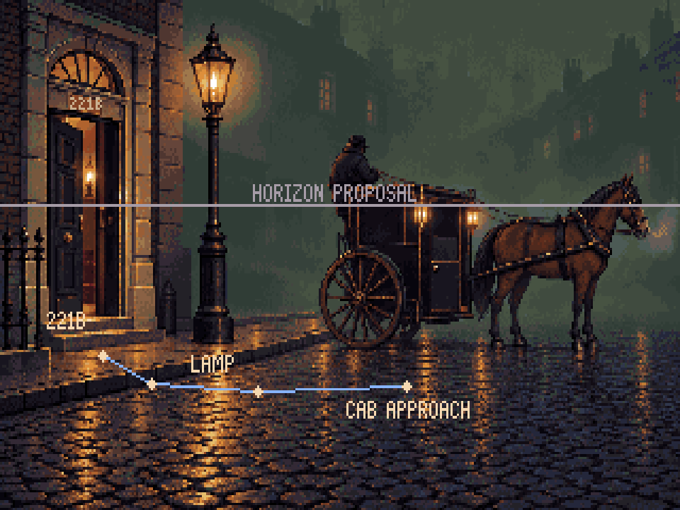
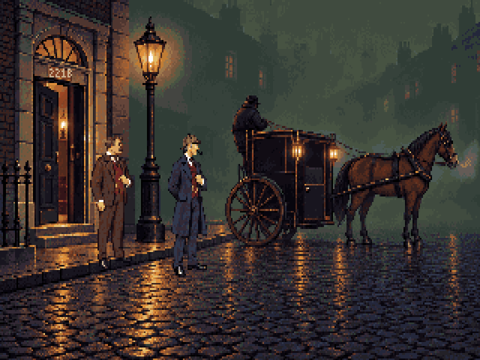

A November night: Mrs Hudson’s lamp inside the hall, a waiting hansom with two lamps, the cabby at the rear, and the horse’s breath in the cold. The foreground stays open for the short departure to Clerkenwell.
Loading…
Review study: the running game still uses r19. Figures are separate scale references, not baked into the painting. Watson’s raised-collar variant remains a cast task.
| Script | Visible in this revision |
|---|---|
| 101-001 / 101-002: fog obscures Baker Street at night | Dark slate/olive mist; distant buildings dissolve into broad shapes. |
| 101-001: the hansom’s lamps are two blurs | Two separate amber carriage lamps softened by mist. |
| 101-003: the horse steams in the cold | Pale breath at the muzzle; horse and cab can remain static. |
| 101-004 / 101-005: Holmes addresses the cabby | Driver perched behind the compartment with reins; cab waiting in the road beside the kerb. |
| 101-006: a small room of gaslight | One public gas lamp and a contained warm patch on the pavement. |
| 101-007: Mrs Hudson’s lamp burns in the hall | Warm lamp visible through the ajar 221B door. |


The Blender guide establishes metre-scale relationships before painting. The generated painting changed positions, so the painted layout below is measured separately; it is a proposal for the engineer to fit in play.



Blender construction · Layered Pixelorama room · Gas-lamp cels · Measured handoff proposals
Script audit, sources and reproduction · Study resource manifest